Benevita conecta a empresa de cuidados, os cuidadores em campo e as famílias dos pacientes num só aplicativo. Registros em tempo real, escalas, sinais vitais e total transparência.
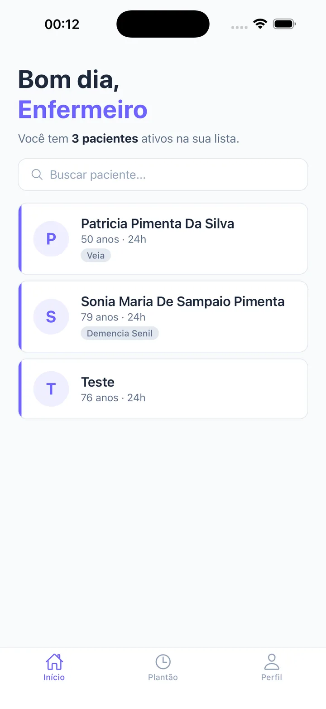
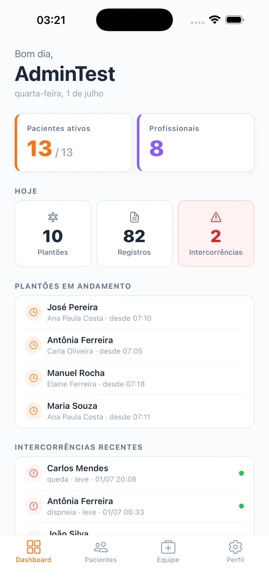
Empresas de home care perdem visibilidade da operação, famílias ficam ansiosas sem informação, e cuidadores dependem de anotações soltas. O Benevita organiza tudo isso.
O gestor vê a operação inteira num piscar de olhos: pacientes ativos, equipe, plantões em andamento, registros do dia e intercorrências que exigem atenção.
Plantões, registros e alertas do dia em tempo real.
Assistente guiado para condições, medicações e sinais vitais.
Convide e gerencie cuidadores; controle de acesso por perfil.
Defina qual cuidador atende cada paciente e em quais dias.
Receitas, despesas, saldo do mês e exportação em PDF.
Convide a família do paciente quando fizer sentido, sem obrigação.
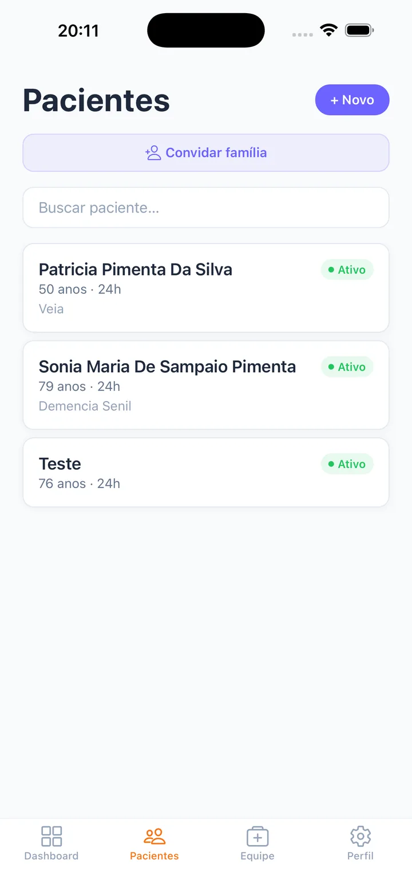
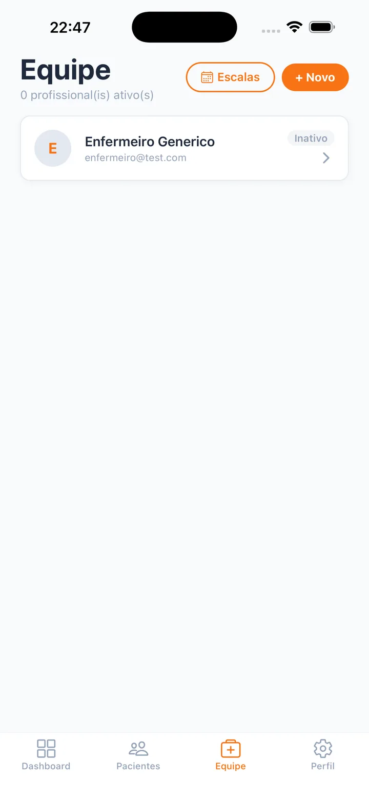
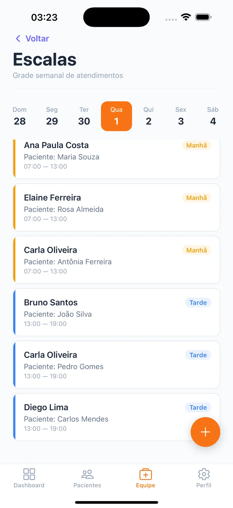
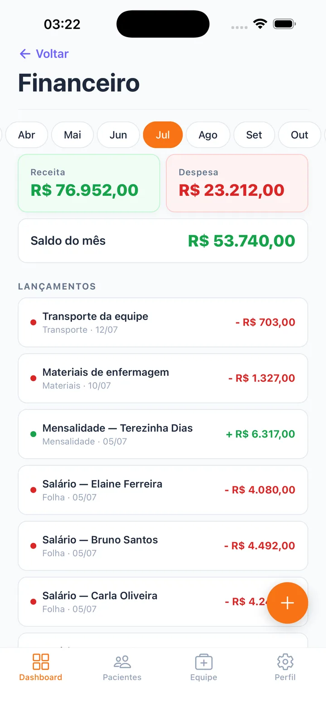
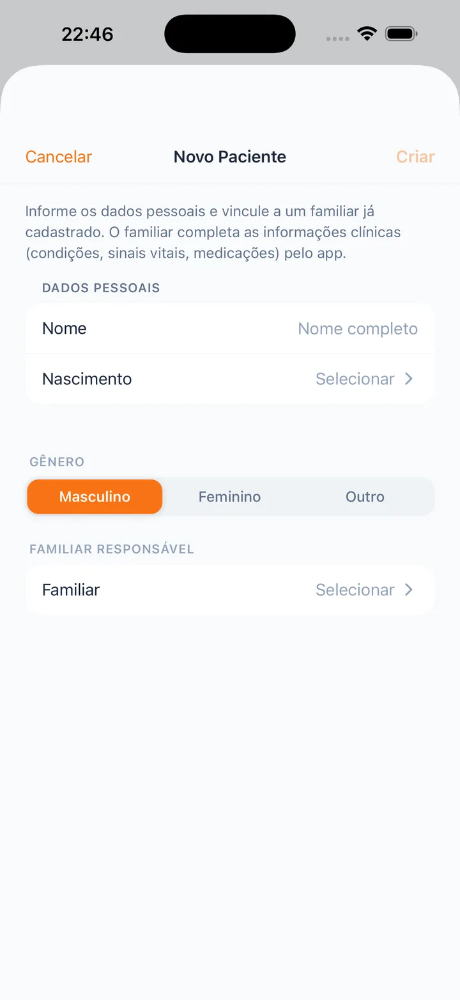
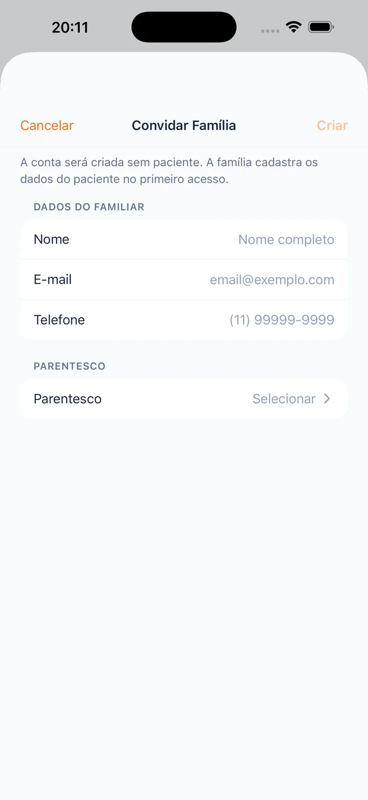
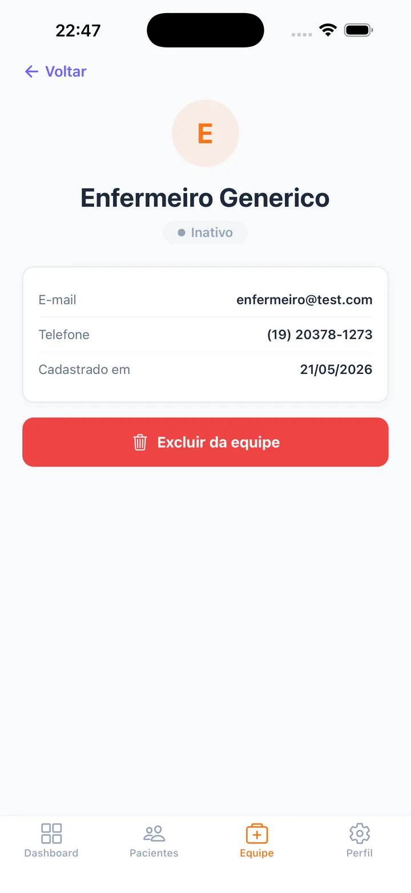
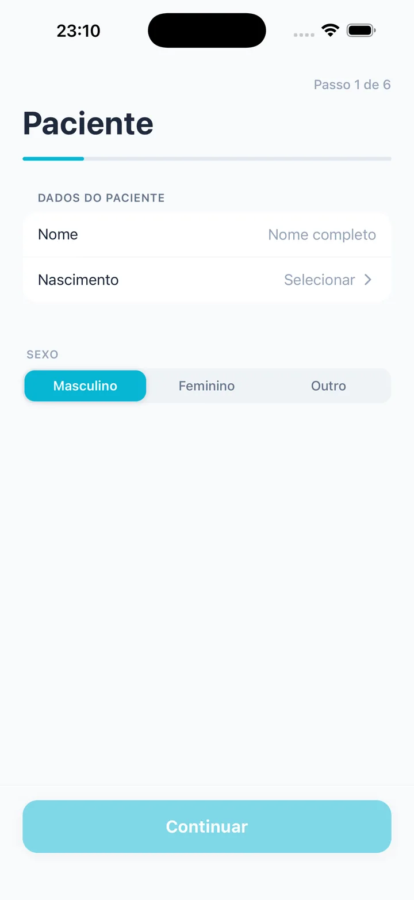
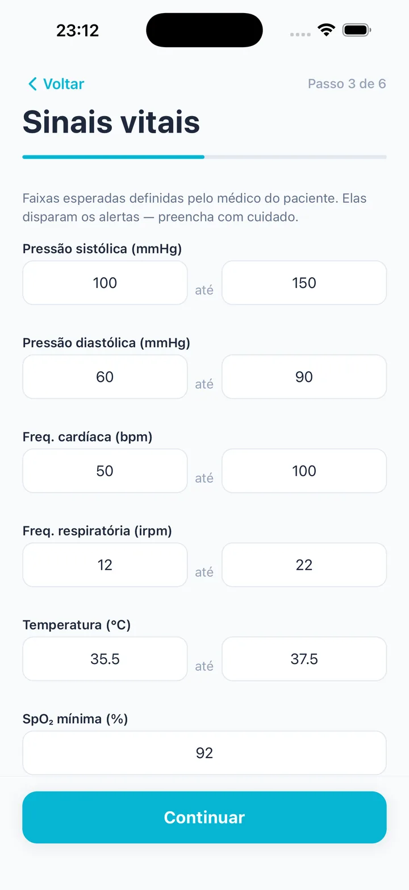
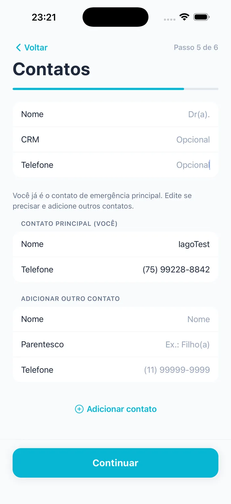
O cuidador vê apenas os pacientes em que foi autorizado e a escala do dia, inicia o plantão e registra tudo (sinais vitais, alimentação, medicamentos e intercorrências) direto do celular, mesmo sem internet.
Só inicia com o paciente agendado para hoje.
Sinais vitais, medicação, alimentação e atividades.
Sem sinal? Fica na fila e sincroniza depois.
Anexe evidências direto do atendimento.
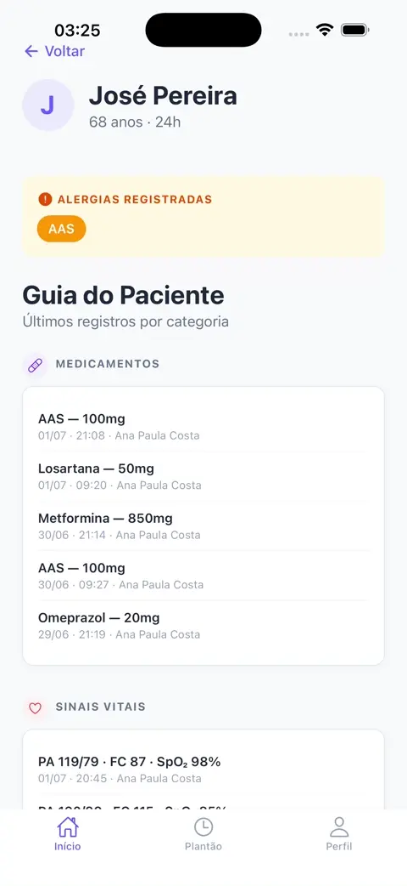
A empresa convida a família com um toque, e ela passa a acompanhar tudo sem precisar preencher nada: dados clínicos, timeline de cuidados, histórico e o gráfico de sinais vitais atualizado a cada registro.
A empresa convida e o acesso já nasce vinculado ao paciente.
Veja cada atendimento conforme acontece.
Gráfico real com faixas de alerta.
Tudo o que já foi registrado, sempre à mão.
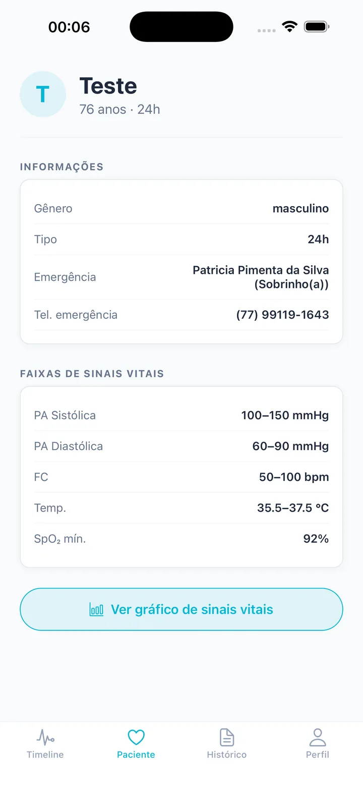
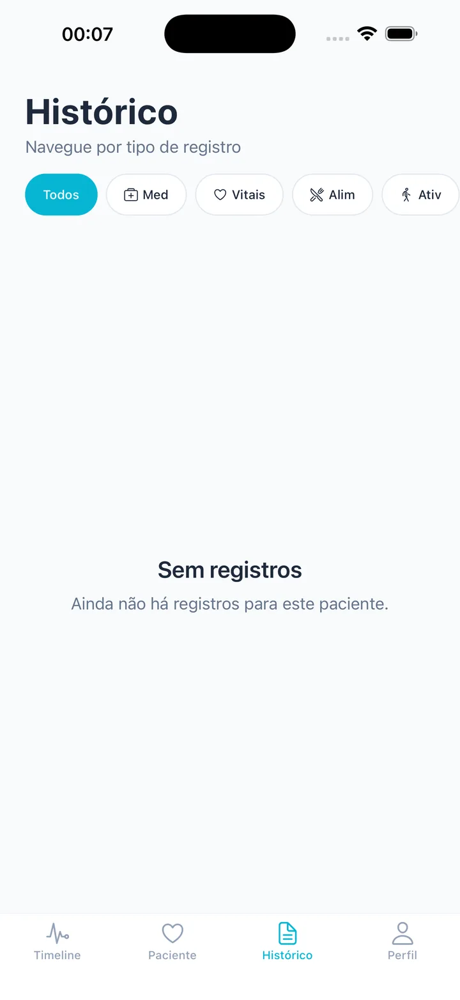
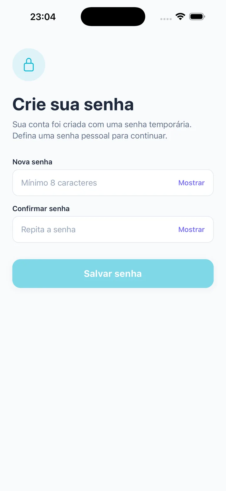
Registros feitos sem internet entram numa fila e sincronizam sozinhos assim que o sinal volta.
Gráfico com faixas de alerta por paciente. A família e a equipe veem tendências, não só números.
A escala definida pela gestão libera o plantão do cuidador só no paciente e dia certos.
Eventos críticos ganham destaque no painel do gestor com gravidade e horário.
Receitas, despesas e saldo por mês, com exportação de relatório em PDF.
Cada perfil vê apenas o que lhe cabe, com isolamento de dados por empresa.
Gravações reais das principais jornadas do produto.
Detalhe do paciente
Cuidador
Sinais vitais em tempo real
Família
Card do paciente
Gestão
Meu plantão
Cuidador
Novo registro
Cuidador
Termos e privacidade
Onboarding
Aplicativo nativo multiplataforma (iOS e Android) com backend em nuvem, sincronização em tempo real e design seguindo as diretrizes da Apple (HIG).